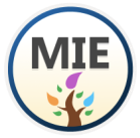
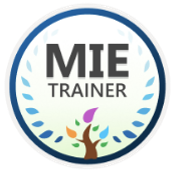

Sobre os programas do Microsoft Innovative Educator
Os programas MIE (Microsoft Innovative Educator) reconhecem educadores globais visionários que estão usando a tecnologia para abrir caminho para os colegas a fim de obter um aprendizado aprimorado e melhores resultados dos alunos. Eles são diversos programas para ajudar tanto educadores que estão apenas começando neste percurso, quanto programas para educadores que são líderes em educação inovadora.
Microsoft Innovative Educator
Inicie seu percurso tornando-se um Microsoft Innovative Educator. Os MIEs usam ferramentas da Microsoft nos cursos e aprenderam os conceitos básicos de algumas dessas ferramentas. Esta é a primeira etapa em um percurso de ingresso em uma rede de aprendizagem profissional de educadores entusiasmados que se reúnem para aprender, compartilhar e crescer. Requisitos:
criar um perfil do Microsoft Learn
Concluir dois módulos de desenvolvimento profissional do educador

Treinador do Microsoft Innovative Educator
Os treinadores da MIE são educadores, treinadores governamentais ou distritais, especialistas em desenvolvimento profissional ou afiliados que desejam treinar educadores e líderes escolares sobre o uso efetivo da tecnologia. Requisitos:
Conclua um [curso da Trainer Academy ministrado por instrutor](/learn/courses/mie-trainer-academy) ou o [roteiro de aprendizagem do MIE Trainer](/learn/paths/mie-trainer-academy-learning-path/) no Microsoft Learn
Ingressar em nosso [grupo do LinkedIn](https://www.linkedin.com/groups/13849104)
Confirmar e relatar o treinamento de 100 educadores entre 1º de julho e 30 de junho de cada ano

Saiba mais
Microsoft Innovative Educator Expert
Conforme você se torna mais proficiente em integrar a tecnologia aos cursos, considere enviar sua autonomeação para ingressar no programa MIE Expert para trabalhar em estreita colaboração com a Microsoft e liderar a inovação na educação. Requisitos:
Torne-se um MIE concluindo dois módulos de treinamento no Microsoft Learn ou por meio de um curso com instrutor (resgatando um código de conquista fornecido por um treinador).
Preencha o formulário de autonomeação que demonstra como você integra a tecnologia ao ensino e ao aprendizado entre 15 de maio e 5 de julho (com uma segunda janela entre 15 de novembro a 15 de dezembro. Observação: os Estados Unidos não aceitarão nomeações durante a segunda janela).